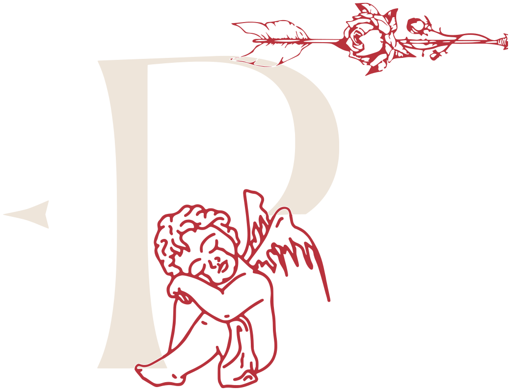
Tatuadora · Joinville, SC
Patty Art Tattoo
Arte atemporal, para quem enxerga além.
- Joinville · bairro América
- Um cliente por dia
- Tatuando desde 2014
A parte mais bonita do meu trabalho nunca foi a tatuagem. Sempre foram as histórias que chegam antes dela.
Patty Ribeiro
A artista
O desenho foi abrigo antes de virar ofício
Curitibana, a Patty cresceu entre silêncios e lápis. Fez do papel um esconderijo e dos traços a forma de dizer o que não cabia em palavras. A arte que um dia foi refúgio virou profissão em 2014.
Foram quase onze anos com estúdio em Balneário Barra do Sul, recebendo gente de Curitiba, do Paraná inteiro e até de Goiás. Em março de 2026 ela abriu um novo capítulo: o estúdio próprio em Joinville, no bairro América.
O que não mudou é o jeito de trabalhar. Antes do desenho vem a conversa: quem é a pessoa, o que ela carrega, o que a tatuagem precisa dizer. Por isso a agenda é de um cliente por dia.
- 12 anos
- tatuando, desde 2014
- 1 cliente
- por dia, com atendimento privado
- 2026
- artista confirmada na Tattoo Show Joinville
O que ela tatua
Estilos
Um bom tatuador não se resume a um único estilo. O feed mostra uma parte; o dia a dia mostra muito mais.
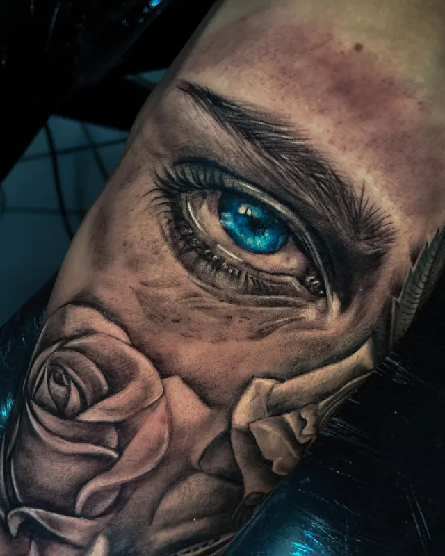
Realismo
Preto e cinza com profundidade: retratos, leões, figuras sacras e fechamentos de braço e perna.
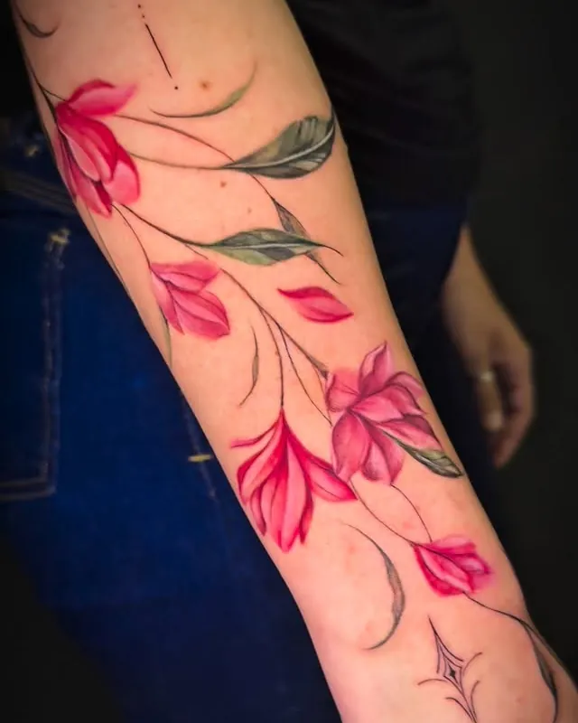
Fine line autoral
Traço fino, flores e composições desenhadas para o movimento do corpo, sempre criadas com você.
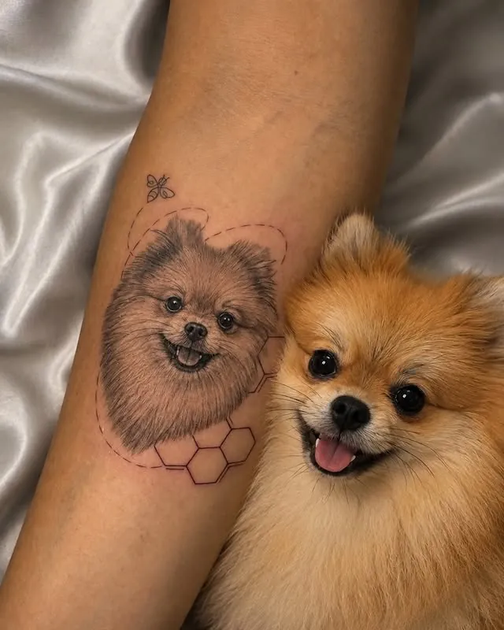
Pets
Retratos de quem está por perto e de quem já partiu. Do mini realismo de 2 cm ao retrato completo.
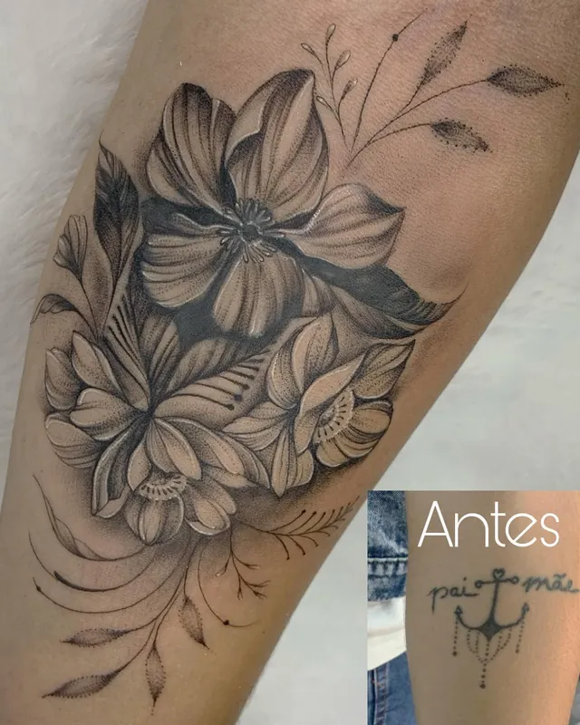
Cicatrizes e coberturas
Composições que respeitam a pele para transformar uma marca ou uma tatuagem antiga em algo novo.
Portfólio
Trabalhos
Homenagens
Pets eternizados
“Tatuar pets não é sobre tinta. É sobre memória. É sobre transformar saudade em permanência.”
O Pitoco foi encontrado amarrado ao pé de uma lixeira. O Curd levou ele para casa e prometeu um fim de vida feliz. Cumpriu. Quando o Pitoco partiu, o Curd veio até a Patty para carregar aquele olhar de novo.
“Quando ele olhou a tatuagem e começou a chorar, eu percebi que não estava apenas tatuando um cachorro. Estava devolvendo um pedacinho dele.”
Quero homenagear o meuO pet ao lado da própria tatuagem
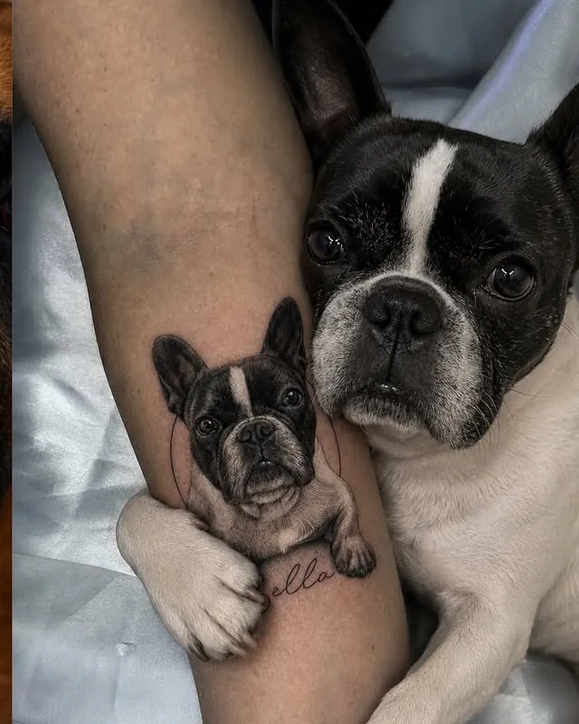
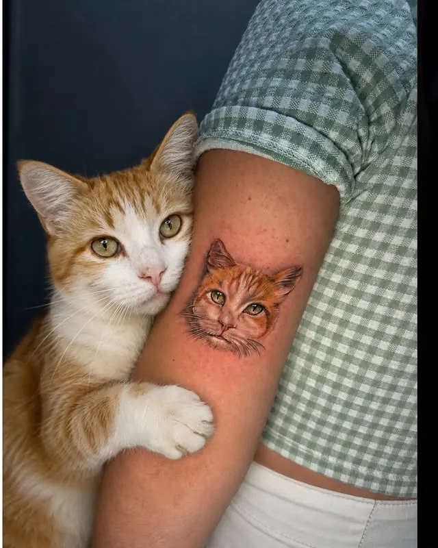
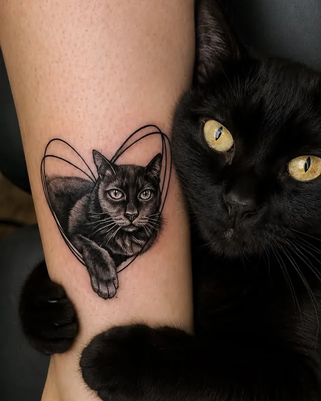
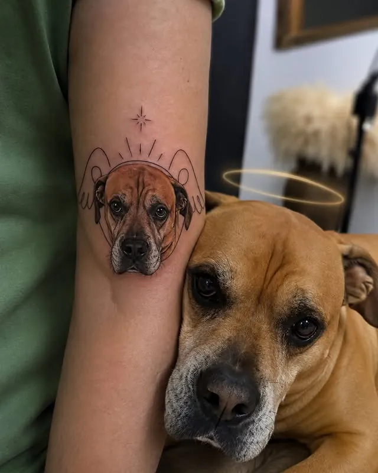
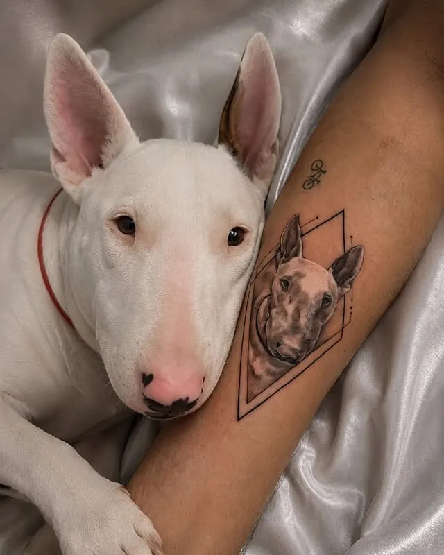
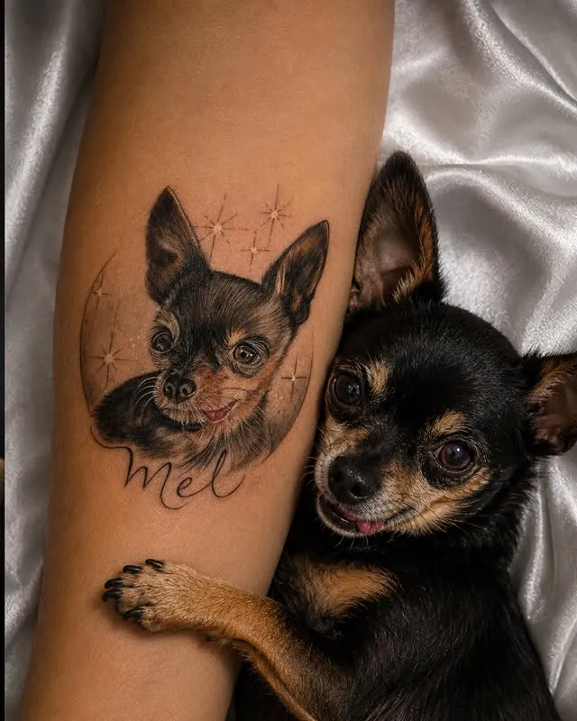
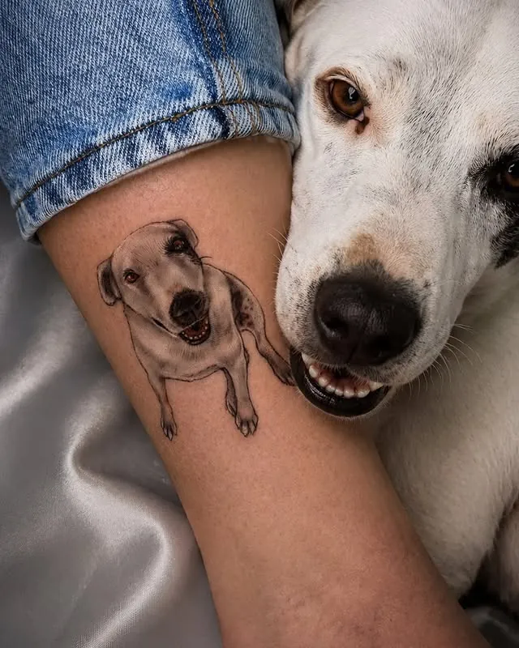
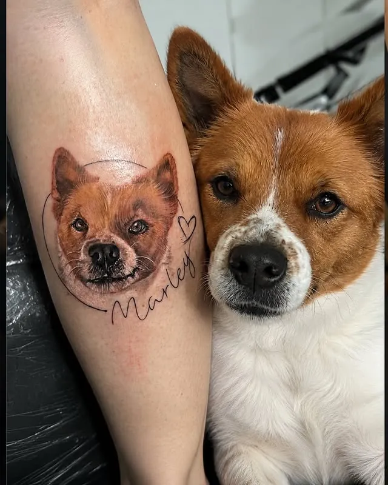
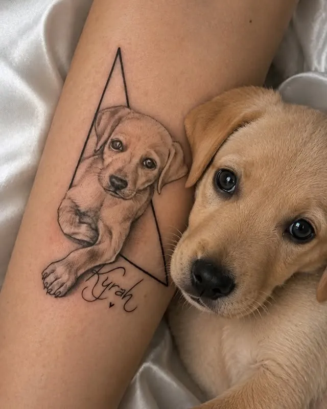
Cicatrizes e coberturas
Não era só cobrir uma cicatriz
A onça foi construída respeitando cada detalhe da pele, para transformar uma marca evidente numa composição natural. As flores foram escolhidas pela própria cliente; as folhas escuras abraçam a história como quem protege um novo começo.
“Era sobre criar uma imagem que, dali em diante, ela tivesse orgulho de ver no espelho.”
Precisa mesmo cobrir?
Nem toda tatuagem mal executada precisa ser escondida. Às vezes uma reforma resolve: anatomia, contraste e composição refeitos por cima do que já existe. Mande uma foto e a Patty diz qual caminho faz mais sentido.
O estúdio
Quando você vem tatuar comigo
- Tem sol entrando pela janela,
- cheiro de café,
- desenhos espalhados,
- música baixa
- e um lugar onde ninguém precisa ter pressa de ser forte o tempo todo.
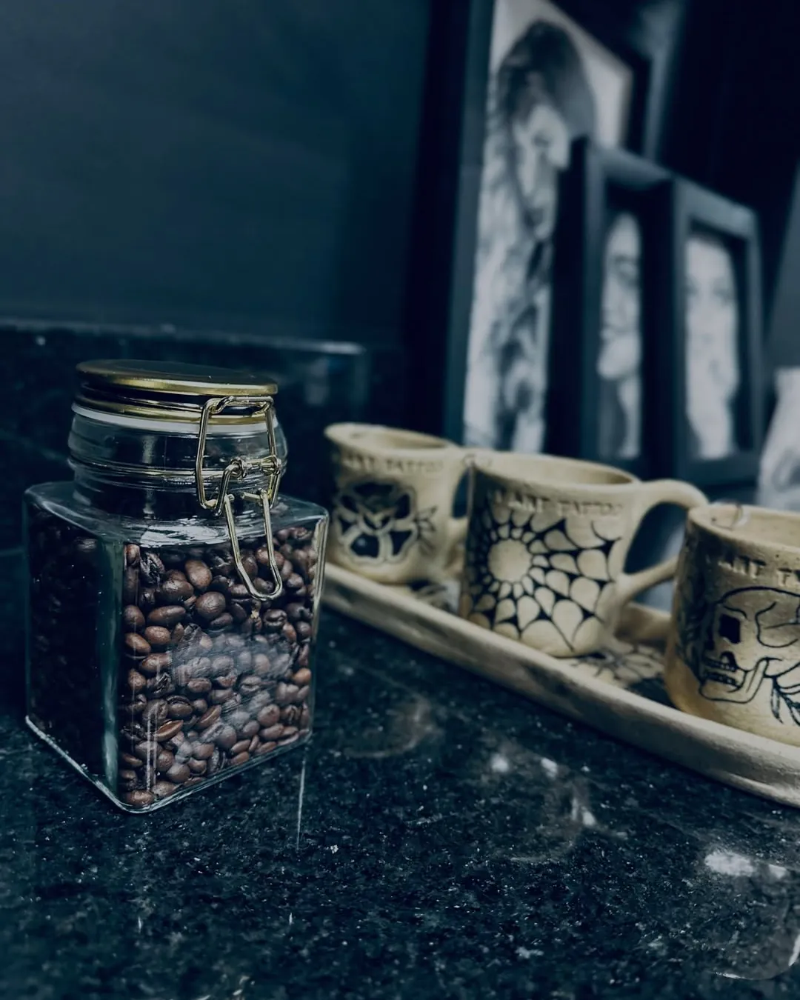
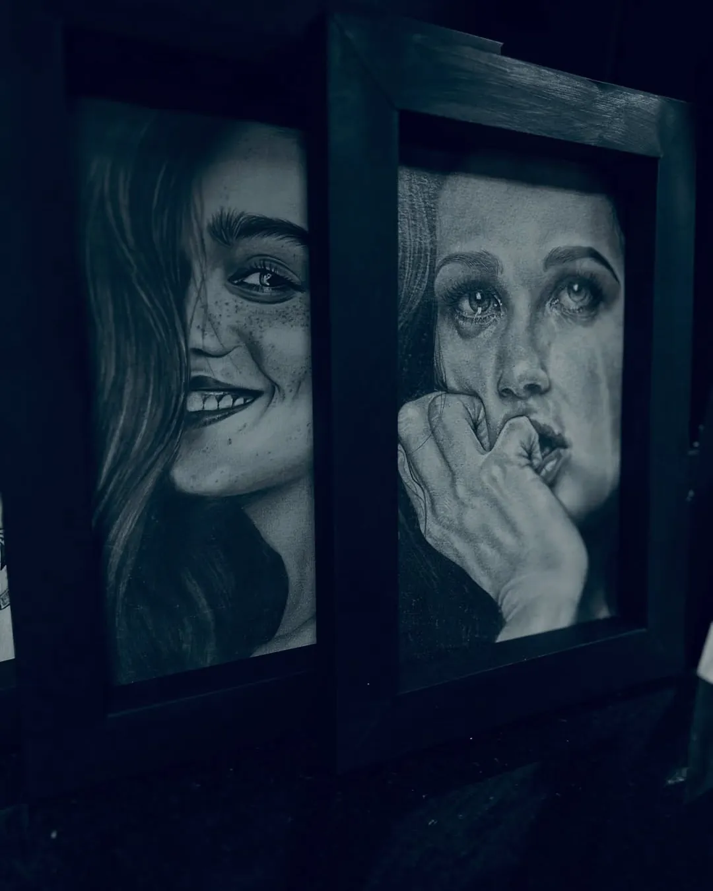
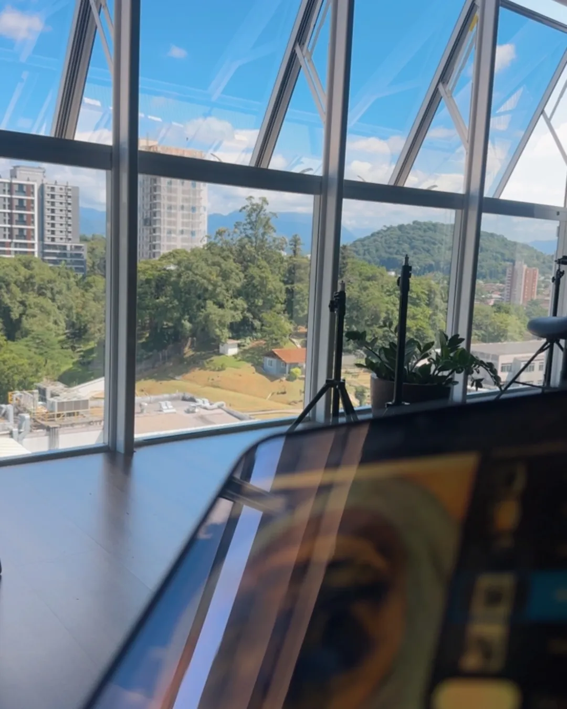
- Um cliente por diaA sessão é só sua, sem fila e sem pressa.
- Atendimento privadoEstúdio próprio, fechado ao público.
- Joinville · AméricaO endereço vai junto com a confirmação do horário.
Orçamento
Como agendar
Conte a sua história
A ideia, o significado e as referências. Pode trazer imagem criada por IA: a Patty adapta para a anatomia do seu corpo e para a tatuagem continuar bonita com os anos.
Local e tamanho
Uma foto do lugar do corpo e a medida aproximada em centímetros.
Margem de valor
Com isso a equipe passa uma margem de orçamento pelo WhatsApp.
Abertura da agenda
A agenda abre por períodos e costuma fechar rápido. Aprovado o orçamento, você garante o seu horário. O resto fica com ela.
Dúvidas
Perguntas frequentes
Quanto custa uma tatuagem?
Depende do tamanho, do local e do nível de detalhe, por isso o orçamento é feito com a ideia e a foto do local. Comparar só números é superficial: o valor inclui experiência, estudo, materiais, biossegurança, tempo de criação e um dia inteiro dedicado a você.
Posso levar uma referência feita por IA?
Pode. A IA ajuda a organizar a ideia, mas não conhece a sua história nem a anatomia do seu corpo. A Patty transforma a referência em um desenho exclusivo, pensado para durar.
Reforma ou cobertura?
Nem toda tatuagem antiga precisa ser escondida. Às vezes refazer contraste e composição por cima resolve. Mande uma foto e ela orienta qual caminho faz mais sentido.
Quantas sessões vai levar?
Trabalhos pequenos e médios costumam sair em uma sessão. Fechamentos e peças grandes são divididos em sessões, com intervalo para a pele descansar.
Como sei quando a agenda abre?
As aberturas são avisadas no Instagram @pattyartetattoo. Quem já mandou a ideia pelo WhatsApp é chamado conforme a ordem dos pedidos.
Onde fica o estúdio?
Em Joinville, no bairro América. O endereço completo é enviado na confirmação do horário.
Me conte a sua história
Se algo dentro de você também quer falar sem palavras, a Patty te encontra no traço.